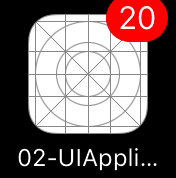
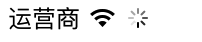
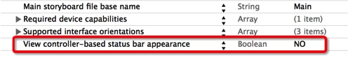
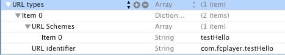

1.UIApplication原理
UIApplication对象是应用程序的象征, 每一个应用都有自己的UIApplication对象,这个对象是系统自动帮我们创建的, 而且是单例的.
一个 iOS 程序启动后创建的第一个对象就是 UIApplication对象,利用 UIApplication
对象,能进行一些应用级别的操作,比如:可以设置应用程序图标右上角的红色提醒数字设置联网指示器的可见性可以设置应用程序的状态栏，进行应用之间的跳转.
2.UIApplication获取
通过 [UIApplication sharedApplication] 可以获得这个单例对象
3.UIApplication的常用属性
设置应用程序图标右上角的红色提醒数字
/// 获取UIApplication对象
UIApplication *ap = [UIApplication sharedApplication];
/// 在设置之前, 要注册一个通知,从ios8之后,都要先注册一个通知对象.才能够接收到提醒.
UIUserNotificationSettings *notice = [UIUserNotificationSettings settingsForTypes:UIUserNotificationTypeBadge categories:nil];
/// 注册通知对象
[ap registerUserNotificationSettings:notice];
/// 设置提醒数字
ap.applicationIconBadgeNumber = 20;

设置联网指示器的可见性
@property(nonatomic,getter=isNetworkActivityIndicatorVisible) BOOL networkActivityIndicatorVisible;
应用程序状态
@property(nonatomic,readonly) UIApplicationState applicationState;
typedef NS_ENUM(NSInteger, UIApplicationState) {
UIApplicationStateActive,
UIApplicationStateInactive,
UIApplicationStateBackground
}
设置连网状态
ap.networkActivityIndicatorVisible = YES;

4.UIApplication管理状态栏
从iOS7开始，系统提供了2种管理状态栏的方式:
1. 通过 `UIViewController`管理（每一个`UIViewController`都可以拥有自己不同的状态栏）
2. 通过 `UIApplication`管理（一个应用程序的状态栏都由它统一管理）
在iOS7中，默认情况下，状态栏都是由UIViewController管理的， UIViewController实现下列方法就可以轻松管理状态栏的可见性和样式.
状态栏的样式:
- (UIStatusBarStyle)preferredStatusBarStyle;
状态栏的可见性:
- (BOOL)prefersStatusBarHidden;
如果想利用UIApplication
来管理状态栏，首先得修改Info.plist的设置

5.UIApplication有个功能十分强大的openURL:方法
- (BOOL)openURL:(NSURL*)url;
openURL:方法的部分功能有:
打电话
打电话有三种实现方式，每个都有点区别，分别说一下。
// 最简单直接的方式，直接跳到拨号界面
UIApplication *app = [UIApplication sharedApplication];
[app openURL:[NSURL URLWithString:@"tel://10086"]];
// 这个方式的缺点是打完电话不会自动回到原应用，直接停留在通话记录界面。
// 拨号之前会弹框询问用户是否拨号，拨完后能自动回到原应用
UIApplication *app = [UIApplication sharedApplication];
[app openURL:[NSURL URLWithString:@"telprompt://10086"]];
// 这个方式的缺点是用的私有的 API，所以可能不会被审核通过。
// 创建一个 UIWebView 来加载 URl， 拨完后能自动回到原应用
if (_webView == nil) {
_webView = [[UIWebView alloc] initWithFrame:CGRectZero];
}
[_webView loadRequest:[NSURLRequest requestWithURL:[NSURL URLWithString:@"tel://10010"]]];
// 需要注意的是：这个webView千万不要添加到界面上来，不然会挡住其他界面
// 电话号码不能有空格。
发短信
发短信也有两种实现方式。
// 直接跳转到发短信界面
UIApplication *app = [UIApplication sharedApplication];
[app openURL:[NSURL URLWithString:@"sms://10086"]];
// 这样不能指定短信内容，而且不能自动回到原应用。
// 使用 MessageUI 框架
// 如果想指定短信内容，那就得使用 MessageUI 框架。
//包含主头文件
#import <MessageUI/MessageUI.h >
// 显示发短信的控制器
MFMessageComposeViewController *vc = [[MFMessageComposeViewController alloc] init];
// 设置短信内容
vc.body = @"吃饭了没？";
// 设置收件人列表
vc.recipients = @[@"10010", @"02010010"];
// 设置代理
vc.messageComposeDelegate = self;
// 显示控制器
[self presentViewController:vc animated:YES completion:nil];
// 代理方法，当短信界面关闭的时候调用，发完后会自动回到原应用
- (void)messageComposeViewController:(MFMessageComposeViewController*)controller didFinishWithResult:(MessageComposeResult)result
{
// 关闭短信界面
[controller dismissViewControllerAnimated:YES completion:nil];
if(result == MessageComposeResultCancelled) {
NSLog(@"取消发送");
} else if(result == MessageComposeResultSent) {
NSLog(@"已经发出");
} else {
NSLog(@"发送失败");
}
}
发邮件
[app openURL:[NSURL URLWithString:@"mailto://12345@qq.com"]];
这样发完邮件后不会自动回到原应用。
下面方法可以解决此问题：
// 通过 MFMailComposeViewController 发邮件
// 1，发邮件
// 不能发邮件
if (![MFMailComposeViewController canSendMail])
return;
MFMailComposeViewController *vc = [[MFMailComposeViewController alloc] init];
// 设置邮件主题
[vc setSubject:@"会议"];
// 设置邮件内容
[vc setMessageBody:@"今天下午开会吧" isHTML:NO];
// 设置收件人列表
[vc setToRecipients:@[@"XXXX@qq.com"]];
// 设置抄送人列表
[vc setCcRecipients:@[@"1234@qq.com"]];
// 设置密送人列表
[vc setBccRecipients:@[@"56789@qq.com"]];
// 添加附件（一张图片）
UIImage *image = [UIImage imageNamed:@"xxx.png"];
NSData *data = UIImagePNGRepresentation(image);
[vc addAttachmentData:data mimeType:@"image/png" fileName:@"xxx.png"];
// 设置代理
vc.mailComposeDelegate = self;
// 显示控制器
[self presentViewController:vc animated:YES completion:nil];
// 2，发邮件代理方法,邮件发送后的代理方法回调，发完后会自动回到原应用
- (void)mailComposeController:(MFMailComposeViewController*)controller didFinishWithResult:(MFMailComposeResult)result error:(NSError*)error
{
// 关闭邮件界面
[controller dismissViewControllerAnimated:YES completion:nil];
if(result == MFMailComposeResultCancelled) {
NSLog(@"取消发送");
} else if(result == MFMailComposeResultSent) {
NSLog(@"已经发出");
} else {
NSLog(@"发送失败");
}
}
打开一个网页资源
[app openURL:[NSURL URLWithString:@"http://ios.itcast.cn"]];
打开其他 app 程序
注册自定义URL协议
首先被启动的应用需要向iPhone注册一个自定义URL协议。这是在你的项目文件夹的info.plist
文件进行的（就是你改变应用程序图标的同一个文件）。
1 .右键，选择“Add Row”
2 .Key值选择“URL types”
3 .打开“Item 0″,然后为该key增加一个URL identifier。可以是任何值，但建议用“反域名”(例如 “com.fcplayer.testHello”)。
4 .在“Item 0”下再加一行。
5 .选择“URL Schemes” 作为Key。
6 .输入你的URL协议名 (例如“testHello://”应写做“testHello”)。如果有必要，你可以在这里加入多个协议。
操作截图如下：

访问自定义URL
NSURL * myURL_APP_A = [NSURL URLWithString:@"testHello://"];
if ([[UIApplication sharedApplication] canOpenURL:myURL_APP_A]) {
NSLog(@"canOpenURL");
[[UIApplication sharedApplication] openURL:myURL_APP_A];
}
自定义处理URL
有些时候我们除了启动还需向另外一个应用发送参数，这是也可以通过自定义的URL来实现，如：
testHello://
testHello://com.fcplayer.testHello
testHello://config=1&abar=2
这时我们在被启动应用中就必须进行自定义处理，在delegate中实现该消息(Cocos2d加在AppDelegate中)，例如：
- (BOOL)application:(UIApplication *)application handleOpenURL:(NSURL*)url
{
// Do something withthe url here
}
应用评分功能
为了提高应用的用户体验，经常需要邀请用户对应用进行评分。
应用评分无非就是跳转到AppStore展示自己的应用，然后由用户自己撰写评论
如何跳转到AppStore，并且展示自己的应用。
方法1
NSString *appid = @"xxxx";
NSString *str = [NSString stringWithFormat: @"itms-apps://ax.itunes.apple.com/WebObjects/MZStore.woa/wa/viewContentsUserReviews?type=Purple+Software&id=%@", appid];
[[UIApplication sharedApplication] openURL:[NSURL URLWithString:str]];
方法2
NSString *str = [NSString stringWithFormat: @"itms-apps://itunes.apple.com/cn/app/id%@?mt=8", appid];
[[UIApplication sharedApplication] openURL:[NSURL URLWithString:str]];
UIApplicationMain
main函数中执行了一个UIApplicationMain这个函数
UIKIT_EXTERN int UIApplicationMain(int argc, char *argv[], NSString * __nullable principalClassName, NSString * __nullable delegateClassName);
argc,argv: 直接传递给UIApplicationMain进行相关处理即可。
principalClassName: 指定应用程序类名(APP的象征), 该类必须是UIApplicationMain(或子类),如果为nil,则用UIApplication类作为默认值。
delegateClassName: 指定应用程序的代理类,该类必须遵守UIApplicationDelegate协议。
UIApplicationMain函数会根据principalClassName创建UIApplication对象,根据delegateClassName创建一个delegate对象,并将该delegate对象赋值给UIApplication对象中的delegate属性。
接着会建立应用程序的Main Runloop(时间循环),进行事件的处理(首先会在程序完毕后调用delegate对象的application:didFinishLaunchingWithOptions方法)。
程序正常退出时UIApplicationMain函数才返回。
程序完整启动流程
- 执行Main
- 执行UIApplicationMain函数.
- 创建UIApplication对象,并设置UIApplicationMain对象的代理.UIApplication的第三个参数就是UIApplication的名称,如果指定为nil,它会默认 为UIApplication.UIApplication的第四个参数为UIApplication的代理.
- 开启一个主运行循环.保证应用程序不退出.
- 加载info.plist.加载配置文文件.判断一下info.plist文件当中有没有Main storyboard file base name里面有没有指定storyboard文件,如果有就去加载info.plist文件,如果没有,那么应用程序加载完毕.
- 通知应用程序，调用代理方法
UIAppDelegate
所有的移动操作系统都有个致命的缺点:app很容易受到打扰。比如一个来电或者锁屏会导致app进入后台甚至被终止,还有很多其它类似的情况会导致app受到干扰,在app受到干扰时,会产生一些系统事件,
这时UIApplication会通知它的delegate对象,让delegate代理来处理这些系统事件
delegate可处理的事件包括:
- 应用程序的生命周期事件(如程序启动和关闭)
- 系统事件(如来电)
- 内存警告
...
UIApplication会在程序一启动时候创建一个遵守UIApplicationDelegate的代理.
这个就是我们程序一创建时的AppDelegate类。AppDelegate就是遵守了UIApplicationDelegate协议。 在这个类中定义很多监听系统事件的方法.同时也定义了一些应用程序的生命周期方法.
@implementation AppDelegate
// 1. 应用程序启动完成，会调用此方法，启动之后，将不再调用此方法！
// 如果因为内存等原因，应用程序被操作系统干掉，再次点击图标，会调用此方法！
- (BOOL)application:(UIApplication *)application didFinishLaunchingWithOptions:(NSDictionary *)launchOptions
{
NSLog(@"应用程序启动");
return YES;
}
// 2. 应用程序注销激活状态，游戏应该再次方法中暂停游戏进程！此方法在游戏开发中尤为重要！
- (void)applicationWillResignActive:(UIApplication *)application
{
NSLog(@"%s", __func__);
// Sent when the application is about to move from active to inactive state. This can occur for certain types of temporary interruptions (such as an incoming phone call or SMS message) or when the user quits the application and it begins the transition to the background state.
// Use this method to pause ongoing tasks, disable timers, and throttle down OpenGL ES frame rates. Games should use this method to pause the game.
}
// 3. 应用程序退出到后台，释放共享资源，保存用户数据，停止时钟，保存足够的应用程序状态信息...
- (void)applicationDidEnterBackground:(UIApplication *)application
{
NSLog(@"%s", __func__);
// Use this method to release shared OC-UIApplication, save user data, invalidate timers, and store enough application state information to restore your application to its current state in case it is terminated later.
// If your application supports background execution, this method is called instead of applicationWillTerminate: when the user quits.
}
// 4. 应用程序进入前台，如果在进入后台保存数据等操作，在此方法中，回复进入后台的操作
- (void)applicationWillEnterForeground:(UIApplication *)application
{
NSLog(@"%s", __func__);
// Called as part of the transition from the background to the inactive state; here you can undo many of the changes made on entering the background.
}
// 5. 应用程序变成活动状态，重新启动原来暂停的状态
- (void)applicationDidBecomeActive:(UIApplication *)application
{
NSLog(@"%s", __func__);
// Restart any tasks that were paused (or not yet started) while the application was inactive. If the application was previously in the background, optionally refresh the user interface.
}
// 6. 应用程序将被终止
- (void)applicationWillTerminate:(UIApplication *)application
{
// Called when the application is about to terminate. Save data if appropriate. See also applicationDidEnterBackground:.
}
@end
模仿UIApplication单例
要求:程序一启动就创建创建对象.创建的对象只能通过share的方式获取对象.不能够进行alloc 操作,当执行alloc时, 程序发生崩溃
1.程序一启动的时候就创建对象.
当类被加载到内存的时候就会调用load的方法,它会比main方法优先调用
static Persion *_instance;
+ (void)load
{
/// 想要保存创建的对象, 要用成员属性,但是现在是类方法, 没有办法访问成员属性,所以搞了一个static的静态变量进行保存
/// 创建对象
_instance = [[self alloc] init];
}
2.保证调用alloc时会产生异常, 重写系统的是alloc方法
+(instancetype)alloc
{
当调用alloc方法时,先查看一下_instance有没有值,如果已经有值的话,直接抛出异常.
if(_instance)
{
NSException *exception = [NSException exceptionWithName:@"NSInternalInconsistencyException"
reason:@"There can only be one Persion instance."
userInfo:nil];/// 抛出异常
[exception raise];
}
/// 保持系统的做法.
return [super alloc];
}
3.通过share方式获取对象
+ (instancetype)sharePersion
{
return _instance
}